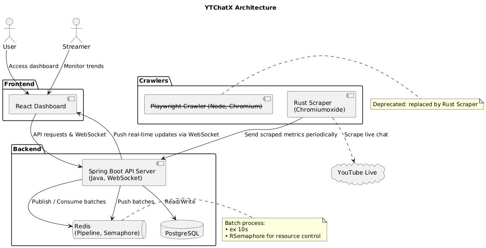

YTChatX
YouTube 라이브 채팅 실시간 분석 웹사이트
시스템 아키텍처

프로젝트 목적
YouTube 스트리머와 시청자들이 채팅 트렌드를 실시간으로 분석하고 소통 패턴을 파악할 수 있도록 도와주는 플랫폼을 제공합니다. 특히 대규모 라이브 스트림에서 발생하는 방대한 채팅 데이터를 효율적으로 처리하고 시각화하여, 스트리머가 시청자와의 소통을 더 잘 이해할 수 있도록 지원합니다.
기술 스택
Spring Boot·Java·Redis·Playwright·PostgreSQL·WebSocket·Rust·Chromiumoxide·React
담당 역할
- 시스템 아키텍처 설계
- Spring Boot API 개발
- Playwright 크롤링 시스템
- Rust 스크래퍼 개발
- Redis 실시간 처리
- React 대시보드 개발
- WebSocket 실시간 통신
- 성능 최적화
주요 성과
-
대규모 실시간 데이터 처리
Playwright 기반 자동화로 시청자 3만 명 라이브에서 초당 최대 1,677개 메시지를 안정적으로 수집. YouTube의 동적 로딩과 rate limiting을 우회하여 안정적인 데이터 수집 파이프라인 구축.
-
성능 최적화를 위한 Rust 도입
기존 Java 크롤러의 한계를 극복하기 위해 Rust + Chromiumoxide 기반 경량 스크래퍼 도입. 메모리 사용량 65% 감소, 50개 이상의 동시 크롤러 운영으로 확장성 3배 향상.
-
안정적인 배치 처리 시스템
Redis Pipeline과 RSemaphore를 활용하여 메시지 2,500개/10초 단위로 안정적인 배치 처리 구현. 리소스 제어를 통해 시스템 과부하 방지 및 데이터 손실 최소화.
-
실시간 분석 및 시각화
실시간 도네이션 감지 알고리즘 구현 및 키워드 기반 채팅 트렌드 시각화 기능 개발. WebSocket을 통한 실시간 업데이트로 사용자 경험 향상.
스크린샷
이미지를 클릭하면 크게 볼 수 있습니다.
프로젝트 회고
- 배운 점
- 대규모 실시간 데이터 처리의 복잡성을 경험했습니다. 특히 YouTube의 동적 UI와 rate limiting 문제를 해결하면서 웹 크롤링의 기술적 한계와 다양한 해결 방안을 깊이 있게 학습했습니다. 또한 Java와 Rust의 성능을 직접 비교하며 언어별 특성과 적합한 활용 시나리오를 이해할 수 있었습니다.
- 아쉬운 점
- YouTube API의 제약으로 일부 기능을 크롤링에 의존해야 했던 점이 아쉬웠습니다. 또한 초반에 스크래퍼의 다양한 구현 방식을 충분히 검토하고 테스트해보지 못해, 후반에 성능 측면에서 개선할 여지가 있던 점이 아쉬웠습니다.
- 향후 계획
- Rust 스크래퍼를 각 실행 바이너리로 돌리는 방식 대신, Rust Scraper Server를 유저 환경에 배포해 실행하도록 전환할 계획입니다. 이 서버는 각 쓰레드에서 스크래퍼를 관리하며, gRPC를 통해 Spring Boot 서버와 통신합니다. 이렇게 하면 관리가 용이하고, 서버 측 자원 효율성을 높이며, 확장성과 유지보수성이 개선됩니다. 또한 NLP 기반의 채팅 감정 분석, 스팸 필터링, 자동 하이라이트 추출 등으로 스트리머에게 더 많은 가치를 제공하고 싶습니다.